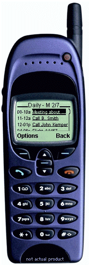

NotWired.com is a complete mobile portal solution built for mobile professionals. Access to NotWired.com software is available through your mobile device and Internet browser.

To take the interactive tour, click on the hyperlinks on the mobile phone.
| Daily | Calendar events are listed
and available through the link navigation buttons. Events can be created, moved, changed
or viewed. Events that contain contact information can link to the contact database, dial
the phone number, fetch addresses and fetch directions. Users can jump directly to create
an event, jump to a date or return to the main index from the options menu. Weekly views are available. |